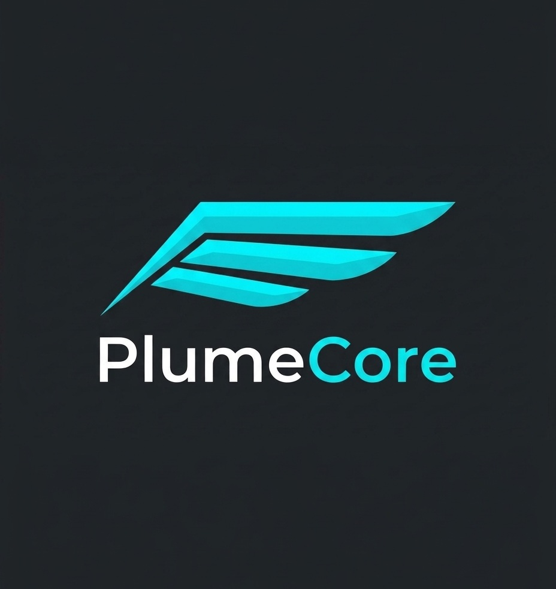

場景與組件
用節點組合角色、碰撞、重力、跳躍、攝影機與房間，邊編輯邊 Play 預覽。

PlumeCore_Project 是一款以場景節點與組件為核心的 2D 遊戲引擎。下載桌面版，在同一個工作空間建立場景、設定物理與邏輯，再匯出你的遊戲。
用節點組合角色、碰撞、重力、跳躍、攝影機與房間，邊編輯邊 Play 預覽。
編輯器會自動保存專案。安裝程式放在使用者程式資料夾，不會把整套開發檔散落在桌面。
在專案中選擇桌面圖示；建立專案 EXE 或匯出遊戲時，會把同一張圖示套用到 EXE。